Joukowski Airfoil: Potential Flow & CFD Visualization
Analytical modelling of a cambered Joukowski airfoil using MATLAB, accompanied by a separate ANSYS Fluent study documenting pressure, velocity, pathline and mesh views. This page presents the submitted project evidence without treating the two studies as a quantitatively validated comparison.
Project objective and method
For the analytical study, a shifted circle was transformed into a Joukowski airfoil. MATLAB was used to examine inviscid, incompressible potential-flow streamlines, velocity and pressure coefficient distributions at 6° angle of attack, and lift and pitching-moment trends for angles from −5° to 10°.
The supporting Fluent archive contains an ANSYS Workbench/Fluent case and simulation figure exports illustrating pressure and velocity fields, pathlines, and the computational mesh.
MATLAB — analytical airfoil study
The project includes airfoil geometry generation, streamline visualization, surface velocity, pressure coefficient, and lift/moment trends. The original report discusses upper-surface acceleration, suction near the leading edge and the approximately linear lift response expected in potential-flow modelling.
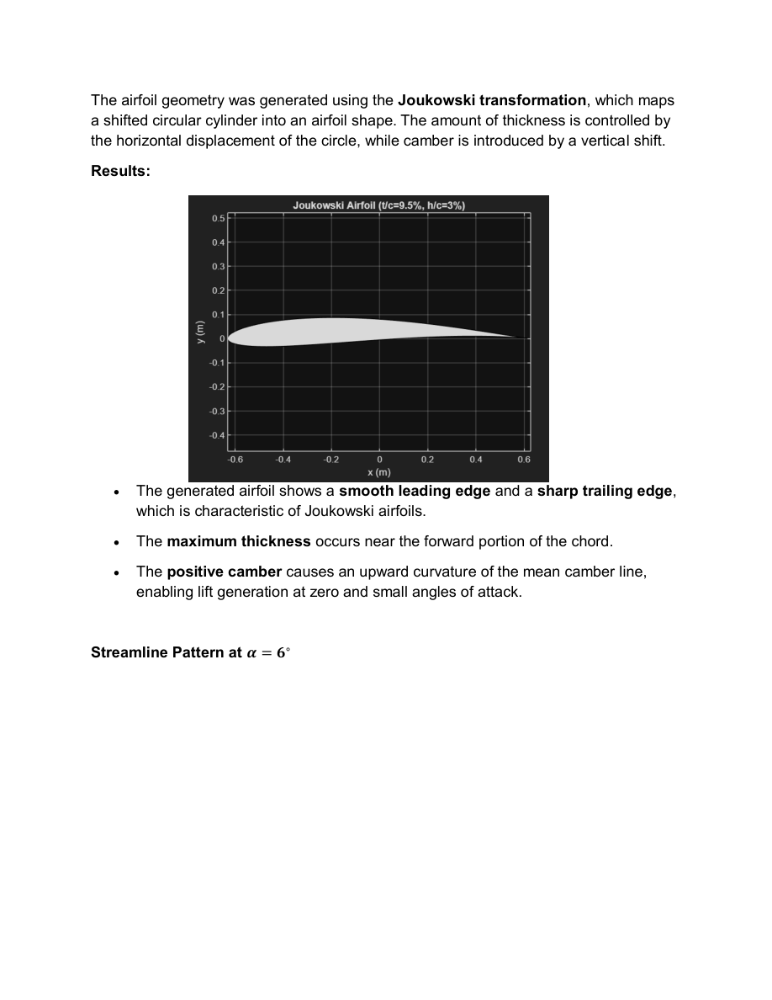
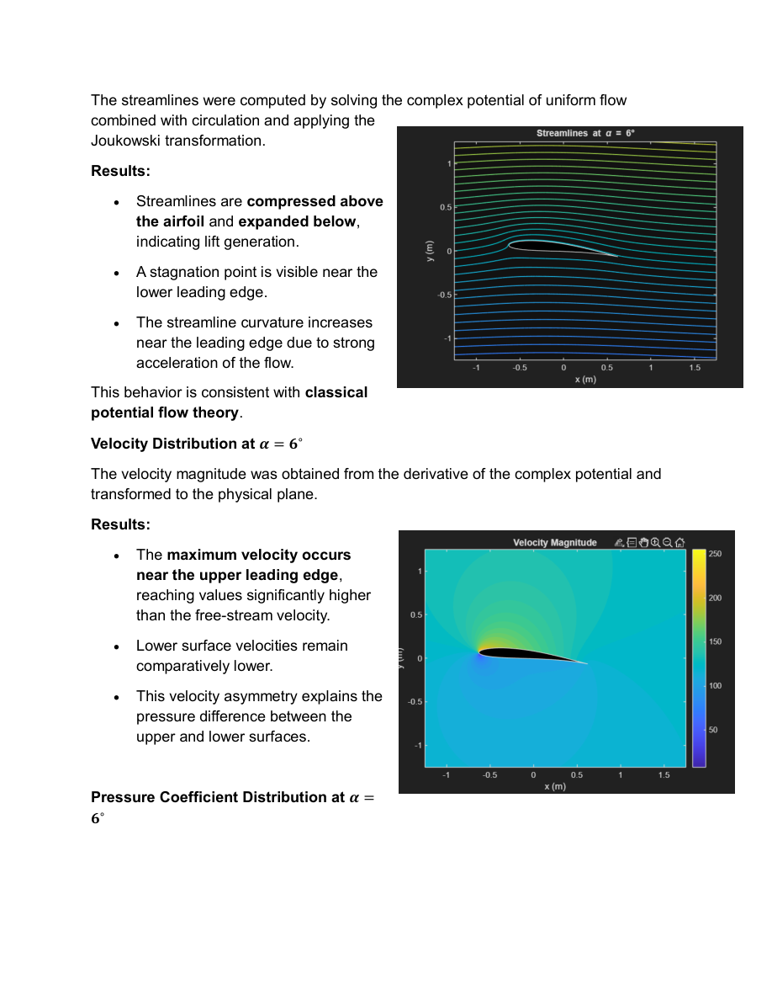
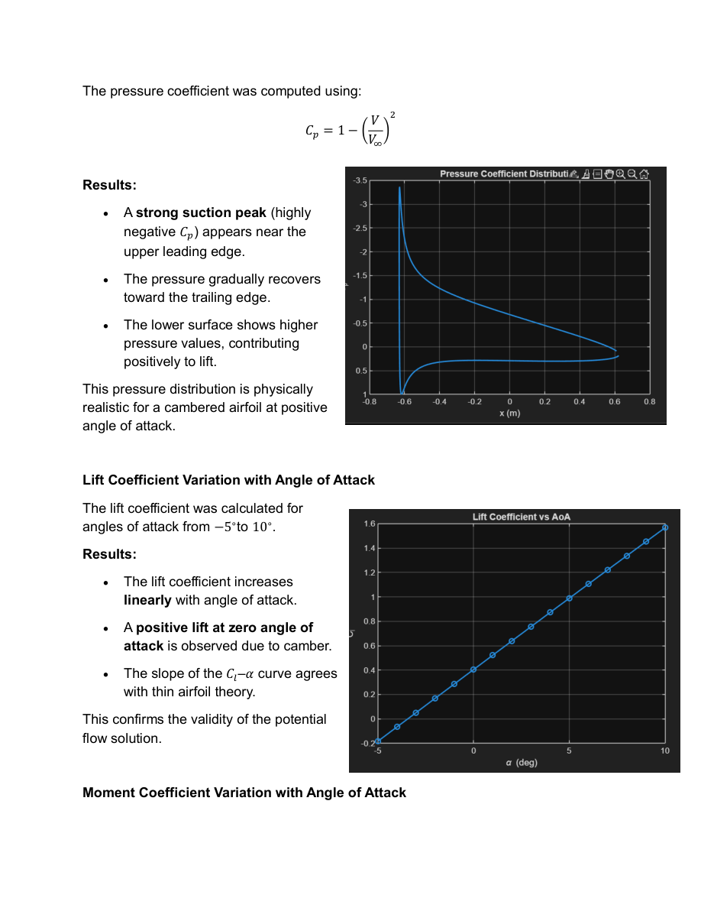
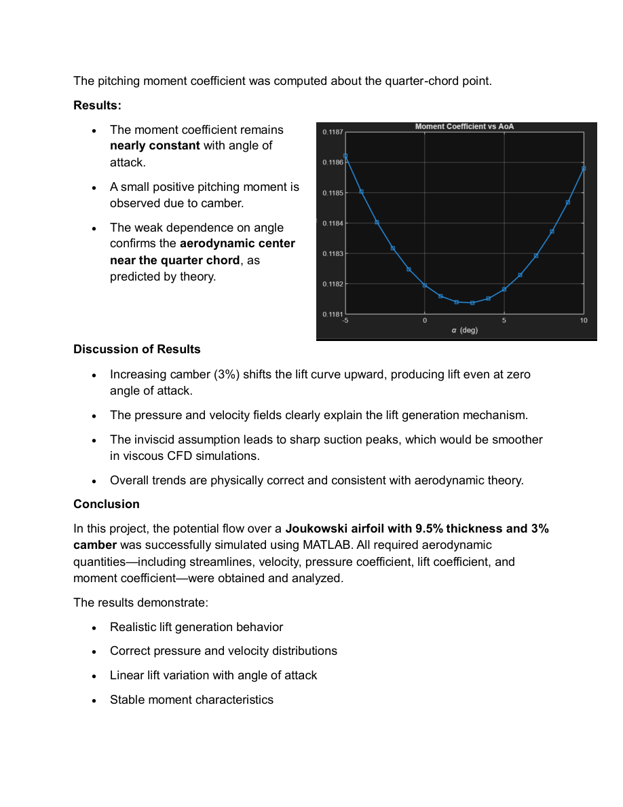
ANSYS Fluent — supplementary CFD material
The separate CFD documentation includes pressure and velocity contours, pathlines, and mesh illustrations. These views are presented as supporting simulation material rather than a claimed formal validation against MATLAB.
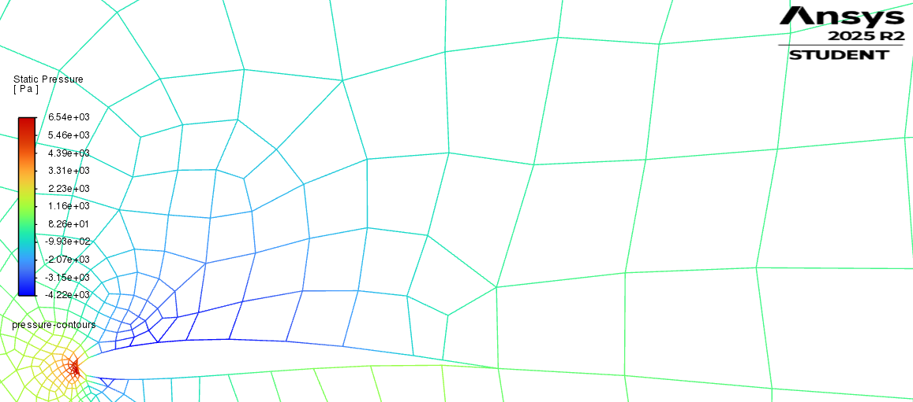
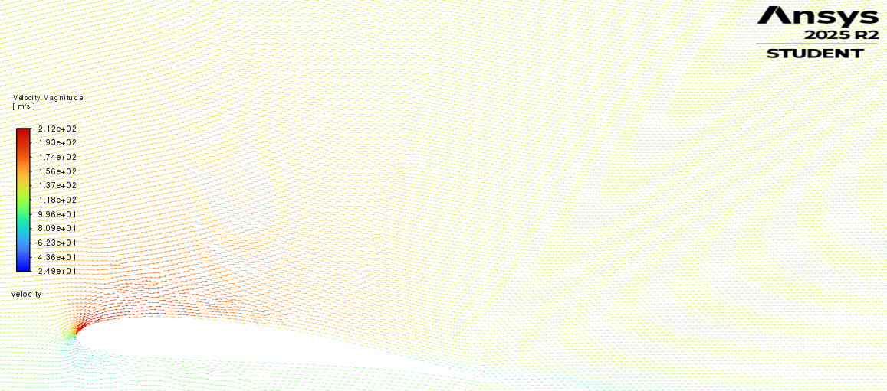
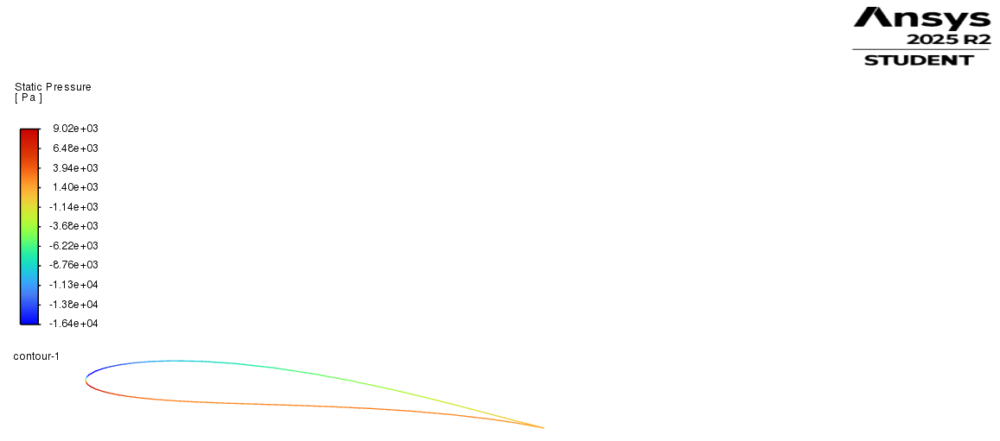
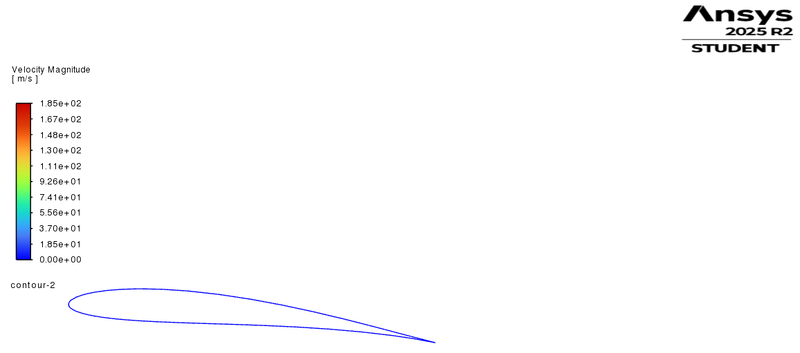
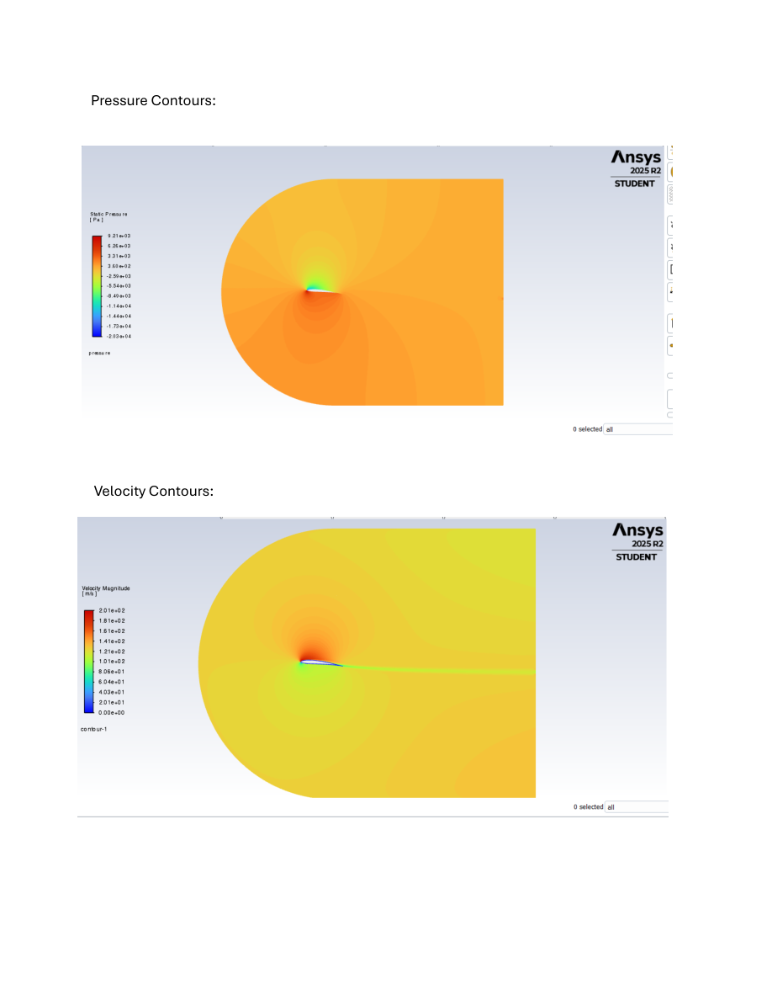
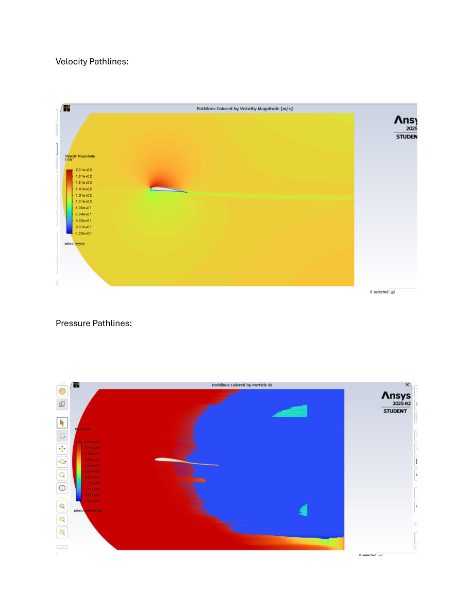
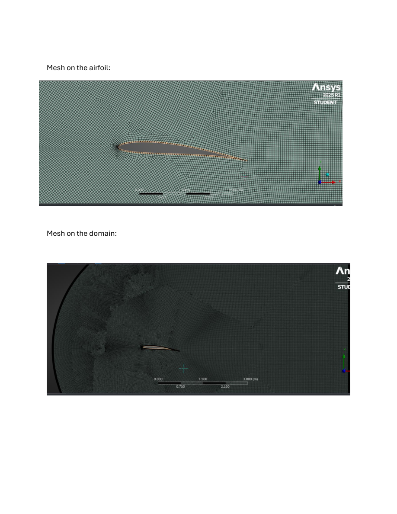
Engineering methods and tools
- MATLAB: complex potential modelling, Joukowski transform, angle-of-attack analysis, coefficient plots.
- ANSYS Fluent / Workbench: CFD case setup and visual results supplied in the project archive.
- Limitations: potential flow neglects viscous effects; additional documentation would be required for quantitative comparison or experimental validation.
Original project documents
Explore the submitted analytical project report and the supplementary Fluent figures. The MATLAB source file is also available.
MATLAB technical report (PDF)Fluent figures (PDF)MATLAB source (.m)